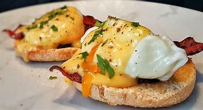

Lynden's Cooking Paradise

Eggs Benedict
The Eggs Benedict was a dish the originated in New York City around the late 19th century. One of the best parts of this dish is that is very versatile and is easily modifiable.
Ingredients
The ingredients involved in producing this amazing dish tend to vary as there are many variations of this dish. The original Eggs Benedict's recipe is quite simple involving:
- 6 Eggs
- 3 English Muffins
- 6 Strips of Bacon
- 4tsp of white vinegar
- 1tbsp of butter
- Hollandaise Sauce
- 3 egg yolks
- 1 tbsp of lemon juice
- ½ cup of butter
Instructions
- In 1-quart saucepan, vigorously stir egg yolks and lemon juice with wire whisk. Add 1/4 cup of the butter. Heat over very low heat, stirring constantly with wire whisk, until butter is melted.
- Add remaining 1/4 cup butter. Continue stirring vigorously until butter is melted and sauce is thickened. (Be sure butter melts slowly so eggs have time to cook and thicken sauce without curdling.) If the sauce curdles (mixture begins to separate and melted butter starts to appear around the edge of the pan and on top of the sauce), add about 1 tablespoon boiling water and beat vigorously with wire whisk or egg beater until smooth. Keep warm.
- Split English muffins; toast. Spread each muffin half with some of the 3 tablespoons butter; keep warm.
- In 10-inch skillet, melt 1 teaspoon butter over medium heat. Cook bacon in butter until light brown on both sides; keep warm.
- Wipe out skillet to clean; fill with 2 to 3 inches water. Add vinegar to water. Heat to boiling; reduce to simmering. Break cold eggs, one at a time, into custard cup or saucer. Holding dish close to water’s surface, carefully slip eggs into water. Cook 3 to 5 minutes or until whites and yolks are firm, not runny (water should be gently simmering and not boiling). Remove with slotted spoon.
- Place 1 slice bacon on each muffin half. Top with egg. Spoon warm sauce over eggs. Sprinkle with paprika.